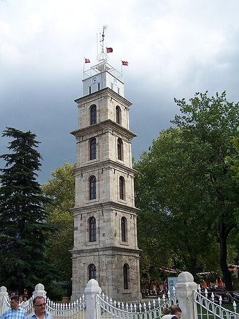

Osmanlı dönemi mimarisini yansıtan önemli bir anıtsal eserdir. Tophane Parkı içinde, İmparatorluğun kurucusu Osman Gazi ile ikinci padişahı Orhan Gazi'nin türbelerinin arkasında, eski adı Meydanı-ı Osmaniye olan Tophane Meydanı'ndadır.[1] Bulunduğu yerden panoramik Bursa manzarasının görünmesi dolayısıyla, bir yangın kulesi olarak da kullanılmıştır.
Aynı yerde ilk olarak Sultan Abdülaziz döneminde bir saat kulesi yaptırılmış ancak 1900'lü yıllara kadar, bilinmeyen bir tarihte yıkılmıştır.[3] Mevcut kulenin yapımına 2 Ağustos 1904'te başlanmış, 31 Ağustos 1905'te tamamlanarak II. Abdülhamit'in tahta çıkışı şerefine, Vali Reşit Mümtaz Paşa tarafından törenle hizmete sokulmuştur
Kule 6 katlı olup 33 metre uzunluğunda ve 4,65 metre enindedir.[5] Tepesinde dört bir yana bakacak şekilde 4 adet saat bulunacak şekilde planlanmıştır.[5] Güney kısmında girişi bulunan kuleye, 89 basamaklı ahşap bir merdivenle çıkılmaktadır. Kulenin üst katının dört cephesinde, 90 santimetre çapında yuvarlak saatler bulunmaktadır.[2]
Günümüzde bir elektronik saate sahiptir ve Bursa Büyükşehir Belediyesi tarafından yangın gözetleme amacıyla da kullanılmaktadır
